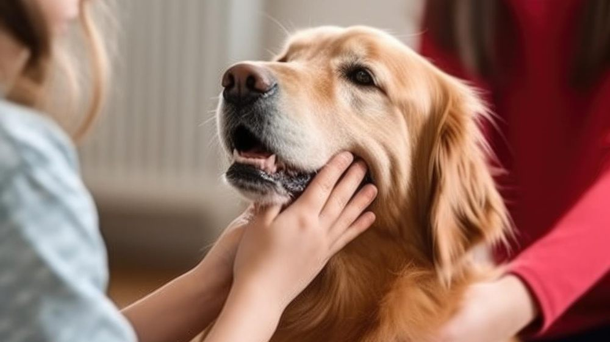
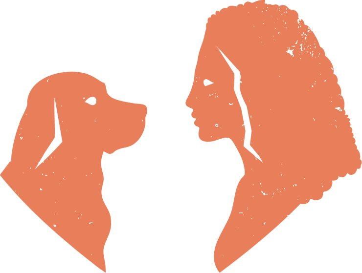
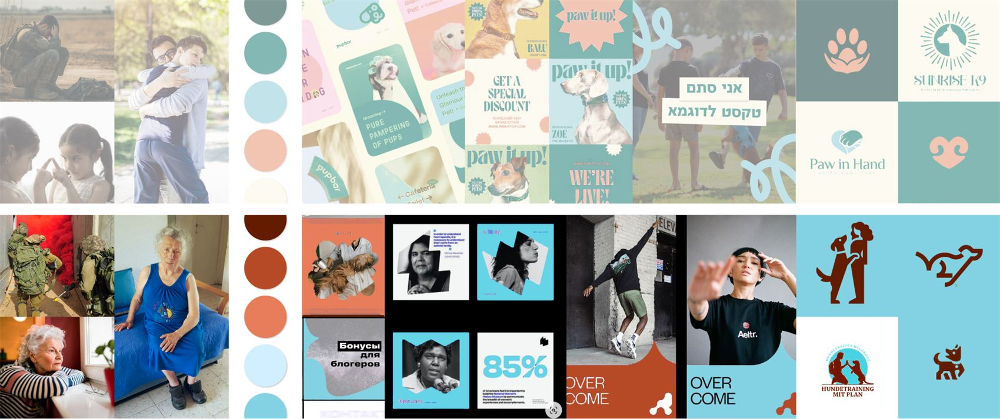
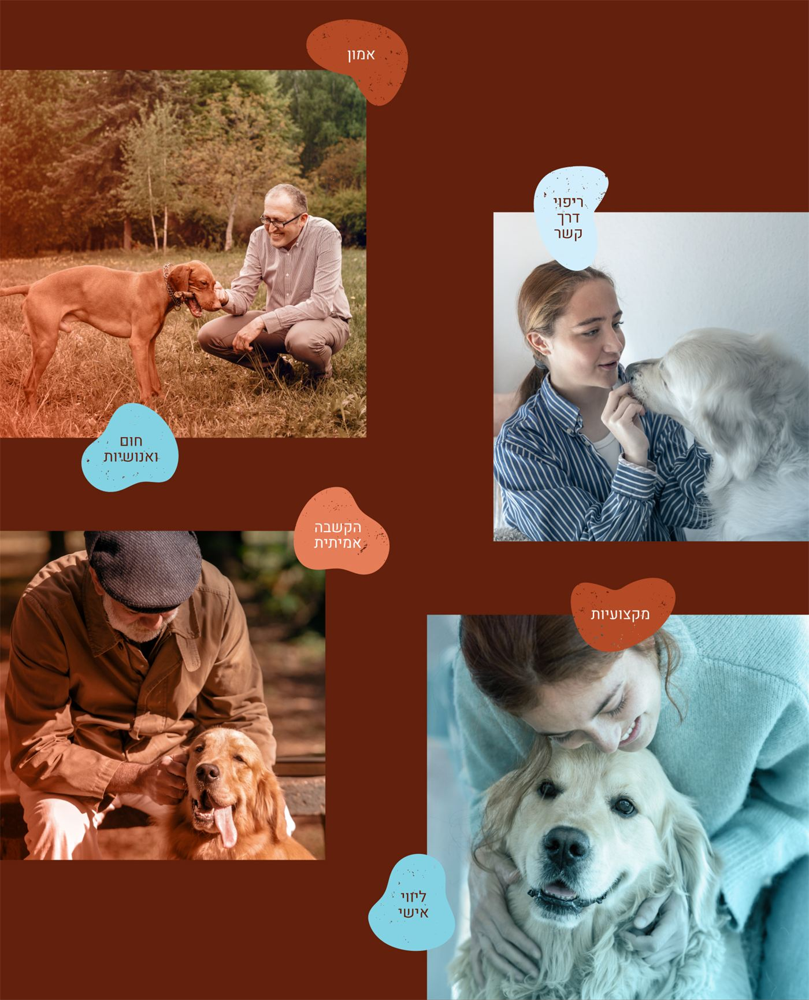
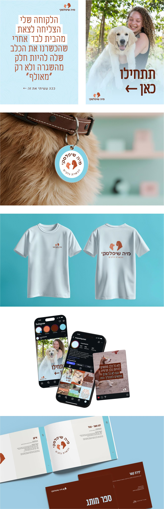

האדם במרכז, לא האילוף
במקום עוד כלב עם רצועה, המותג מספר על האדם ועל המסע שלו - והכלב הוא השותף לדרך.

לסיפור המלאקייס סטאדי
מיתוג להכשרת כלבי תרפיה
התהליך עם מיה נבנה סביב מטרה אחת ברורה - לייצר מותג שמדבר על משמעות. לא עוד עסק לאילוף, אלא מקום שמראה איך הקשר עם כלב תרפיה יכול לשנות חיים.
המותג שם במרכז את האדם, את האתגרים האישיים שלו ואת הדרך שבה הכלב הופך לשותף למסע.
השפה העיצובית מייצרת תחושה של חמלה, קרבה ואותנטיות, ומדגישה שהמשמעות האמיתית היא לא רק באילוף - אלא בקשר שנבנה בין אדם לכלב ובכוח המרפא שלו.

הקשר
שמרפא


המטרה
התהליך עם מיה התחיל מתוך צורך לעשות סדר. עד אז, העסק שלה היה מפוזר, בלי כיוון ברור ובלי שפה אחידה שמייצגת את מה שהיא באמת עושה.
המטרה שלנו הייתה לזקק את המסר, לבנות מבנה ברור וליצור זהות מותג שתעזור לה לבלוט, להתחבר לקהל הנכון ולהעביר את המשמעות האמיתית של העבודה שלה - הקשר המיוחד בין האדם לבין כלב התרפיה שלו.
"יש אנשים שהם במקומות מאוד אפלים וקשה להם לקום בבוקר, והכלב הוא משהו שמכריח אותך לדאוג לו כי אתה אוהב אותו.
וכשלבן אדם יש מישהו לדאוג לו, אז באופן טבעי הגוף והנפש רוצים לדאוג לעצמם."
התהליך
התחלנו משיחת עומק שבה פירקנו יחד את כל החלקים של העסק - מה המשמעות שמיה רוצה להעביר, מי האנשים שהיא רוצה לגעת בהם, ואיך לגרום להם להרגיש שיש להם שותף אמיתי לדרך.
אחר כך יצרתי עבורה 2 לוחות מיקוד שמדמים את הכיוונים למיתוג הסופי. כל אחד מהם מבטא צד אחר באישיות ובחזון שלה.


האתגר
האתגר המרכזי היה לקחת עסק מלא משמעות ורגש, אבל כזה שנראה מבולגן וחסר כיוון, ולבנות לו זהות שתשדר סדר, מקצועיות ועקביות.
מיה ידעה מה היא רוצה לתת ללקוחות שלה. אבל לא ידעה איך לספר את זה נכון, איך להראות את זה כלפי חוץ, ואיך לייצר אמון ובידול מול מתחרים.

הפתרון
אחרי שבחרנו יחד את הכיוון המדויק ביותר, המשכתי לפתח אותו ללוגו שמספר את הסיפור האישי שלה ושל נינג'ה, הכלב שטיפח אצלה את הרצון לעזור לאחרים.
מהלוגו התפתחה שפה ויזואלית חמה ומרגיעה, עם טקסטורות וצורות שנולדו מהפרווה ומהתלתלים - סמל לפתח לעולם מלא משמעות בזכות הקשר בין האדם לכלב.
בנוסף יצרתי עבורה תבניות עיצוב לפוסטים ורילס בקאנבה, כדי לאפשר לה לשמור על עקביות, לספר את הסיפור שלה בדרך נגישה, וליצור נראות שמחברת בין מקצועיות לרגש.
ההחלטות
במקום עוד כלב עם רצועה, המותג מספר על האדם ועל המסע שלו - והכלב הוא השותף לדרך.
הסמל מראה את מיה ואת נינג'ה מביטים זה בזה. זה הסיפור האישי שלה, וגם ההבטחה ללקוחות: קשר שנבנה בגובה העיניים.
הקצוות המחוספסים לא באו לקשט. הם נולדו מהפרווה ומהתלתלים, ונותנים לשפה תחושה חמה, אותנטית ונגישה.
התוצאה
מיה קיבלה זהות שלמה: אסטרטגיה, לוגו, שפה ויזואלית חמה, ספר מותג ותבניות מוכנות לפוסטים ולרילס. במקום עסק מפוזר, יש לה עכשיו דרך אחת ברורה לספר את הסיפור שלה - בצורה מקצועית, עקבית ומלאת רגש.

אבל המיתוג שלכם עדיין לא מצליח להעביר אותו בצורה ברורה, אשמח לעזור לכם להפוך אותו למותג שמספר את הסיפור שלכם בצורה מדויקת 😊
תשאירו פרטים ואחזור אליכם עד 2 ימי עסקים.